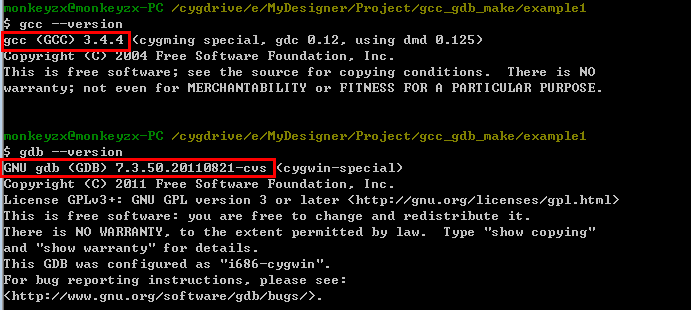
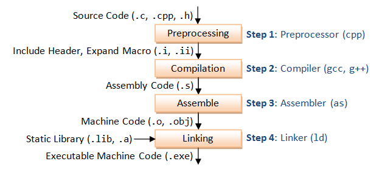
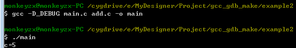
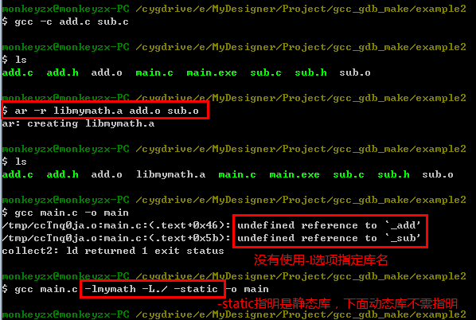
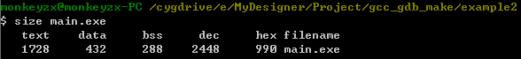
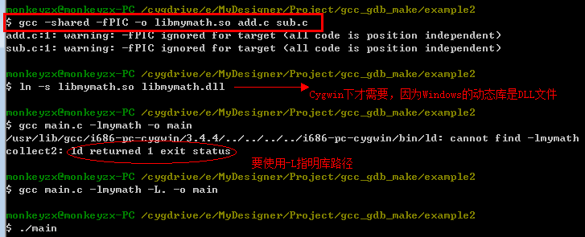
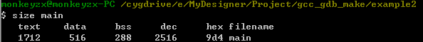
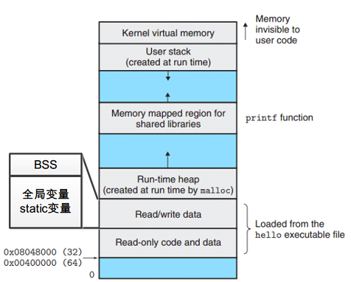
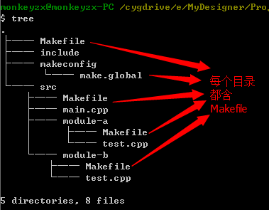

在正式使用gcc之前，我们先来侃侃gcc是啥玩意儿？
现在的GCC是GNU Compiler Collection的简称，既然是Collection，就是指一些工具链的集合。
最初的GCC（当时还只有C编译器，GCC还是GNU C Comiler的简写）是由Richard Stallman开发的，Stallman也是GNU工程的首创者，那时还是在1984年。
随着程序设计语言的发展，GCC逐渐开始支持C语言之外的语言，如C++、Objective-C、Java、Fortran以及Ada等，详细可访问GCC主页http://gcc.gnu.org/
GNU工具链包括：
本文主要讨论gcc，gdb和Makefile的使用。
另外，这里指的gcc还包括了用于编译c++的工具，我们实际使用的g++命令其编译过程调用的是与C语言gcc相同的工具，只不过链接过程有所不同。如无特殊说明，gcc命令的使用g++命令上也都适用。
GCC版本比较多，还有应用在嵌入式ARM、AVR等平台的交叉编译工具，在RHEL/CentOS Linux下，只要使用
yum install gcc
yum install g++
yum install gdb默认情况下一般是安装好的。
在Window下，可选择的gcc安装方式包括MinGW和Cygwin。本文的操作环境就基于Cygwin，Cygwin是一个Window下模拟Linux环境的开源软件，除了能使用gcc、gdb等工具外，还能使用其它许多Shell命令，操作方式与Linux下的终端无太大区别。本文后面讲述到的所有操作都是基于终端的。
安装好了工具后，使用
gcc --version
gdb --version可分别查看gcc和gdb的版本信息，

你可使用下面的，
gcc --help
gdb --help
g++ --help或下面的命令获得关于gcc以及gdb的帮助信息。在使用gcc时偶尔会忘掉一两个参数，这几个命令就非常有用。
man gcc
man gdb
man g++如果在你看来，上网不是那么麻烦的话，则http://linux.die.net/man/1/gcc也可以获得gcc的帮助信息。
好吧，我们现在开始第一个例子（我只熟悉C语言，我们这里讨论的例子都是C语言的例子）。
又遇到学习C语言时的第1个例子——Hello, world!，只不过这次我们更应该说Hello, GCC。
#include <stdio.h>
int main(void)
{
printf("Hello, world.\n");
printf("Hello, GCC.\n");
return 0;
}我们就将上面的程序存储到main.c的文件中，下面请跟着我敲命令吧，
gcc main.c
ls在敲ls命令后你看到了什么？main.c目录下多了个a.exe的程序（Linux下可执行程序是a.out）。好吧，既然你是exe格式，运行吧，
./a.out看到什么，没错：Hello, GCC.
NOTES:
在Linux/Cygwin下执行程序使用"./可执行文件名"。默认不设置时可执行文件名为a.out或a.exe。
到此，你就该说，我已经会使用gcc了，然而，其实你还差远了：
如果你有哪项不知道，不着急，请Go on！
在这之前，你必须了解C代码生成可执行文件的过程，共4步：预处理、编译、汇编、链接。

还是Hello, GCC的例子，请跟着敲命令，
gcc main.c -o main-o 选项表示生成目标文件名为main.exe。
gcc -E main.c -o main.i-E 选项表示预处理操作，预处理就是将宏定义展开，头文件展开。预处理之后的目标文件保存在main.i，这时，你可以查看main.i的预处理结果，
cat _main.cgcc -S main.c -o main.s-S 选项表示编译操作，其结果将生成汇编文件（*.s文件，这里使用-o选项定义目标文件为main.s）。我们也可以查看分析上述Hello代码的汇编代码，
.file "main.c"
.def ___main; .scl 2; .type 32; .endef
.section .rdata,"dr"
LC0:
.ascii "Hello, world.\12\0"
LC1:
.ascii "Hello, GCC.\12\0"
.text
.globl _main
.def _main; .scl 2; .type 32; .endef
_main:
pushl %ebp
movl %esp, %ebp
subl $8, %esp
andl $-16, %esp
movl $0, %eax
addl $15, %eax
addl $15, %eax
shrl $4, %eax
sall $4, %eax
movl %eax, -4(%ebp)
movl -4(%ebp), %eax
call __alloca
call ___main
movl $LC0, (%esp)
call _printf
movl $LC1, (%esp)
call _printf
movl $0, %eax
leave
ret
.def _printf; .scl 3; .type 32; .endef在DSP、ARM等嵌入式平台上，使用gcc编译得到汇编，再根据汇编代码进行优化是一种常用的方法。
NOTES:
生成汇编文件（包含汇编代码的文件）的过程是编译，不是汇编，汇编是将汇编代码转换成目标文件*.obj的过程。 从这点上理解，汇编文件生成可执行文件的过程是没有编译操作的。
gcc -c main.c -o main.obj-c 选项将源文件生成目标文件main.obj，main.obj其实已经是一种近似可执行文件了，通过链接操作链接相应的库就可以执行了。
第4步的链接直接使用gcc main.c -o main就可以完成。
从下面的命令你将更加直观的看到：gcc其实是一套从预处理、编译、汇编到链接工具的集合。
rm main.i main.s main.obj
cpp main.c > main.i
gcc -S main.i
as main.s -o main.o上面分别使用了cpp预处理、gcc编译、as汇编。链接可以使用ld命令，不过操作复杂些。
因此，gcc只是帮我们将多个复杂的操作放在一个命令中，是我们的软件开发过程变得更加高效自动化。
gcc -E -C main.c -o main.igcc -M main.c -o main_makerule
cat main_makerulemain.o: main.c /usr/include/stdio.h /usr/include/_ansi.h \
/usr/include/newlib.h /usr/include/sys/config.h \
/usr/include/machine/ieeefp.h /usr/include/sys/features.h \
/usr/include/cygwin/config.h \
/usr/lib/gcc/i686-pc-cygwin/3.4.4/include/stddef.h \
/usr/lib/gcc/i686-pc-cygwin/3.4.4/include/stdarg.h \
/usr/include/sys/reent.h /usr/include/_ansi.h /usr/include/sys/_types.h \
/usr/include/machine/_types.h /usr/include/machine/_default_types.h \
/usr/include/sys/lock.h /usr/include/sys/types.h \
/usr/include/machine/types.h /usr/include/cygwin/types.h \
/usr/include/sys/sysmacros.h /usr/include/stdint.h \
/usr/include/endian.h /usr/include/bits/endian.h \
/usr/include/byteswap.h /usr/include/sys/stdio.h \
/usr/include/sys/cdefs.hNOTES:
在大工程编译链接过程中，很多类似于“Undefined ...”的错误都是由-llibrary、-Idir或-Ldir的设置错误造成的。
-Dname 宏定义某个name宏，这个宏是全局的，在控制程序上很有帮助 比如有如下main.c源程序，通过_DEBUG宏可以控制是否打印结果，
#include <stdio.h>
int main(void)
{
int a = 2;
int b = 3;
int c = a + b;
#ifdef _DEBUG
printf("c=%d\n", c);
#endif
return 0;
}对比下面使用和不使用-D_DEBUG的运行结果
gcc -D_DEBUG main.c -o main
./main
gcc main.c -o main
./mian-O3 优化的更多.除了打开-O2所做的一切,它还打开了-finline-functions选项.
-g 以操作系统的本地格式(stabs,COFF,XCOFF,或DWARF)产生调试信息. 只有使用了-g才能使用gdb工具进行调试
gcc -g main.c -o main
gdb main有关gdb的操作有很多，将专门详述。
好吧，我们写个多文件小程序：Example2。
main.c
#include <stdio.h>
#include "add.h"
int main(void)
{
int a = 2;
int b = 3;
int c = add(a,b);
#ifdef _DEBUG
printf("c=%d\n", c);
#endif
return 0;
}add.c
int add(int a, int b)
{
return (a+b);
}add.h
#ifndef _ADD_H
#define _ADD_H
extern int add(int a, int b);
#endif使用gcc编译多文件的方法是将多个源文件添加到gcc编译选项中，
gcc -D_DEBUG main.c add.c -o main
./main显示如下执行结果，

NOTES:
上面未将add.h添加到编译文件中是因为：C语言的编译是以.c文件为单位的，每个.c文件都会编译对应到一个.s和.obj文件，而.h文件不会。在上面的例子中，我们只要保 证在main.c在编译的时候能够找到add函数，这是通过#include "add.h"实现的。在链接的时候，main.obj会自动找到到add.obj中的add符号，这都是链接器的功劳。
库时编译好的目标文件的一个打包，在链接时被加载到程序中，分为共享库和静态库。如之前使用到的printf定义就在库libc中，我们只要包含stdio.h就能使用了（其实还要在gcc中使用-llibray选项，只不过gcc默认包含了该选项）。
共享库：在Linux下是.so文件，在Windows下是.dll文件。在链接时，只在程序可执行区建立一个索引表，而不拷贝机器代码。在程序执行时，才根据索引表加载外部函数的机器码。共享库相对于静态库的优点是减少了可执行程序代码量的大小，同时共享库可同时被多个运行程序调用，也能减少内存空间。
![][lib]
无论是静态库还是共享库，在gcc选项中都要使用-l和-L分别制定库名和库路径。
仍以上个add程序为例，说说静态库和共享库的创建和使用，先添加sub函数， sub.c
int sub(int a, int b)
{
return (a-b);
}sub.h
#ifndef _SUB_H
#define _SUB_H
extern int sub(int a, int b);
#endifmain.c
#include <stdio.h>
#include "add.h"
#include "sub.h"
int main(void)
{
int a = 2;
int b = 3;
int c = add(a,b);
int d = sub(a,b);
#ifdef _DEBUG
printf("c=%d\n", c);
printf("d=%d\n", d);
#endif
return 0;
}gcc -c add.c sub.c
ar -r libmymath.a add.o sub.o
这样，我们只要将.a文件和.h文件打包，add和sub就可以在任意地方使用了。
NOTES:
请注意上图给出的在编译main.c时如何链接到静态库的？（-lmymath -static选项）
之前说过，静态库链接的代码量将比共享库链接要大，我们且先看看静态链接后的代码量，稍后做比较 
gcc -shared -fPIC add.c sub.c -o libmymath.so
ln -s libmymath.so libmymath.dll # Windows下才需要
gcc main.c -lmymath -L./ -o main-shared 表示共享库，-fPIC 表示生成与位置无关的代码。

NOTES:
在Linux下，共享库链接的的可执行程序执行时还是会出现找不到库问题，这时有两种方法：
- 可以把当前路径加入/etc/ld.so.conf中然后运行ldconfig，或者以当前路径为参数运行ldconfig（要有root权限）
- 把当前路径加入环境变量LD_LIBRARY_PATH 中
同样，来看看使用共享库生成的可执行文件大小，

诶，0x9d4，人家静态库总大小才0x990字节，你怎么说静态库要比共享库大呢？
第一，静态库生成代码量比共享库大指的是——代码量，代码存储在text段，明显嘛，共享库代码段大小1712要比静态库的1728小；
第二， 前面说过，共享库在链接成可执行文件的时候不是直接拷贝目标文件机器码，而是生成符号表。对，符号表！从上面的结果来看，符号表应该存储在data段，所以共享库的data段比静态库要大。因为我们这里的add.c和sub.c的代码量生成的机器码都非常小，使用共享库生成符号表的方法反而使可执行文件占用的磁盘空间更大了。只是一般情况下，使用共享库的可执行文件占用的磁盘空间将比静态库的小.
之前已经说过，通过-I可以指定头文件路径，-L指定库路径，-l指定库名。从上一节也看到了它们的使用。
那么系统默认的头文件路径和库路径是在哪呢？
cpp -v可以查看默认的头文件路径.
gcc -v main.c -lmymath -L. -o main添加-v选项，就可以查看默认的头文件路径.
gcc提供几个默认的环境变量：
file
显示目标文件格式和运行环境的体系结构（ARM还是x86）
nm
列出目标文件的符号表
ldd
列出可执行文件在运行时所需要的共享库
size
列出目标文件中节的名称和大小。上面已经使用过该工具。
readelf
显示elf目标文件的完整结构，包括elf头中的编码信息，包括size和nm功能。最常用的方法是参数是-d和-h参数。
objdump
所有二进制工具之母，最大作用是反汇编.text节中的二进制信息。最常用的格式是objdump -D -S filename，显示反汇编信息。若要反汇编与源码同时显示，则在gcc编译时要使用-g选项。
NOTES: 上面所有的工具都可以通过 [toolname] --help获得相关的参数帮助信息。
gdb是一个调试工具，与gcc一样，gdb可调试包括C、C++、Java、Fortran、汇编等多种语言。gdb的原始开发者是Richard M.Stallman也是开源运动中的一位领袖级级人物。
如果你还不知道malloc分配变量与局部变量的区别的话，那你还不够格称为程序员。因为程序中的定义或任何的内存分配都直接和可执行文件在用户进程虚存空间的布局映射有关，

如上图所示，包括：
给定一段程序main.c：
#include <stdio.h>
int add(int a, int b)
{
int c = a + b;
return c;
}
int main(void)
{
int i = 0;
int j = 3;
int k = add(i,j);
printf("i=%d, j=%d, k=%d\n", i,j,k);
return 0;
}使用gcc编译及gdb调试程序的方法如下：
Administrator@DADI-20131210YK /cygdrive/e/MyDesigner/Projects/notes/codes/实例学习gcc+gdb+make/gdb
$ gcc -g main.c -o main ### 注：编译时使用-g选项才能生成符号表用于gdb调试
Administrator@DADI-20131210YK /cygdrive/e/MyDesigner/Projects/notes/codes/实例学习gcc+gdb+make/gdb
$ gdb main
GNU gdb (GDB) 7.3.50.20110821-cvs (cygwin-special)
Copyright (C) 2011 Free Software Foundation, Inc.
License GPLv3+: GNU GPL version 3 or later <http://gnu.org/licenses/gpl.html>
This is free software: you are free to change and redistribute it.
There is NO WARRANTY, to the extent permitted by law. Type "show copying"
and "show warranty" for details.
This GDB was configured as "i686-cygwin".
For bug reporting instructions, please see:
<http://www.gnu.org/software/gdb/bugs/>...
Reading symbols from /cygdrive/e/MyDesigner/Projects/notes/codes/实例学习gcc+gdb+make/gdb/main...don
e.
(gdb) l main ### 注：list查看程序，l [函数名/行数]
16
17 return c;
18 }
19
20 int main(void)
21 {
22 int i = 0;
23 int j = 3;
24
25 int k = add(i,j);
(gdb) ### 注：Enter按键接上面继续查看程序
26
27 printf("i=%d, j=%d, k=%d\n", i,j,k);
28
29 return 0;
30 }
31
(gdb) b 23 ### 注：在23行添加断点
Breakpoint 1 at 0x4010d5: file main.c, line 23.
(gdb) b add ### 注：在add函数入口添加断点
Breakpoint 2 at 0x401096: file main.c, line 15.
(gdb) b 29 ### 注：在29行添加断点
Breakpoint 3 at 0x401112: file main.c, line 29.
(gdb) info break ### 注：查看已添加的断点信息
Num Type Disp Enb Address What
1 breakpoint keep y 0x004010d5 in main at main.c:23
2 breakpoint keep y 0x00401096 in add at main.c:15
3 breakpoint keep y 0x00401112 in main at main.c:29
(gdb) r ### 注：运行程序
Starting program: /cygdrive/e/MyDesigner/Projects/notes/codes/实例学习gcc+gdb+make/gdb/main
[New Thread 2492.0x36c]
[New Thread 2492.0x1140]
Breakpoint 1, main () at main.c:23
23 int j = 3;
(gdb) p i ### 注：print打印变量i的值
$1 = 0
(gdb) n ### 注：next下一步（把函数当一条语句直接跳过）
25 int k = add(i,j);
(gdb) s ### 注：step下一步（会执行到函数内部）
Breakpoint 2, add (a=0, b=3) at main.c:15
15 int c = a + b;
(gdb) c ### 注：continue从运行到的当前位置继续往下执行，直到遇到下一个断点
Continuing.
i=0, j=3, k=3
Breakpoint 3, main () at main.c:29
29 return 0;
(gdb) finish ### 注：直接执行到当前函数的结尾处，对main函数不起作用
"finish" not meaningful in the outermost frame.
(gdb) c ### 注：continue继续执行
Continuing.
[Inferior 1 (process 2492) exited normally]
(gdb) q ### 注：程序执行结束，quit退出gdb
Administrator@DADI-20131210YK /cygdrive/e/MyDesigner/Projects/notes/codes/实例学习gcc+gdb+make/gdb
$好了，就这么简单，只要会了以上几个命令，你就可以开开心心的使用gdb了。
gdb还有很多高级的内容，本文目标为入门，更多内请不吝你的手指依次敲击：
>> gdb
>> help参见参考文献[6]，这是gdb的一份官方手册。
Make是构建工程的工具，Make工具对用户编写的Makefile进行解析，实现只需要一个命令就可以编译、链接整个工程。大部分熟悉VC++的人都漠视了Make工具的存在（VC++的Make工具叫nmake），这就是为什么使用VC++多文件编译链接能一步搞定的原因所在。
我们这里当然不是去讨论VC++的nmake，而要讨论的是GNU Make的Makefile。Makefile文件用于描述整个工程的编译、链接的规则。
仍以Example2为例，源代码目录下新建Makefile文件（对了，文件名就是“Makefile”，没.txt等任何后缀），
vim MakefileMakefile文件内容为
main:main.o add.o sub.o # 目标:依赖
gcc main.o add.o sub.o -o main # 命令（必需以TAB开头）
main.o:main.c
gcc -c -D_DEBUG main.c -o main.o
add.o:add.c
gcc -c -D_DEBUG add.c -o add.o
sub.o:sub.c
gcc -c -D_DEBUG sub.c -o sub.o
.PHONY:clean
clean:
-rm main *.o好了，回到命令行，使用make命令看看Makefile的效果：
make
./main什么，输出了正确的结果，那就对了。下面我们来分析下上面的Makefile。
目标：依赖
命令（以TAB开头）目标是链接后的可执行文件名；依赖是工程中的用于编译的c文件和用于连接的*.o文件的集合；就用gcc编译的工程而言，命令就是gcc命令，可以使用任意的gcc参数。
使用make命令解析Makefile文件，解析的文件名可以是Makefile或makefile，如果是其它名称，则需要使用make -f [filename]指定文件名。强烈建议使用Makefile作为文件名（符合Linux的哲学——简洁、首字母大写容易突出文件位置）。
Makefile可以有多个目标（main.o add.o sub.o），但只能有一个最终目标（main）。Makefile文件中第一条规则中的目标将确定为最终目标。make命令默认执行最终目标，若只执行Makefile中其它目标，使用make [Target]，如要清除工程下的目标文件，使用
make cleanMakefile中将那些没有任何依赖只有执行动作的目标称伪目标（clean），使用.PHONY声明。伪目标不能作为最终目标。
Makefile中使用变量：Makefile中的变量将是按字符串的方式进行替换，下面是一些系统特殊的变量。
$^: 代表所有依赖文件
$@：代表目标
$<：代表依赖文件中的第一个依赖文件变量可以大大简化Makefile的编写复杂度，使用变量后的Makefile如下：
CC=gcc
OBJS=main.o add.o sub.o
CFLAGS=-D_DEBUG
main:$(OBJS)
$(CC) $(CFLAGS) $^ -o $@
main.o:main.c
$(CC) $(CFLAGS) -c $^ -o $@
add.o:add.c
$(CC) $(CFLAGS) -c $^ -o $@
sub.o:sub.c
$(CC) $(CFLAGS) -c $^ -o $@
.PHONY:clean
clean:
-rm main *.o其中CC、OBJS、CFLAGS都是自定义的Makefile变量，$^和$@是系统特殊的变量。
CC=gcc
OBJS=main.o add.o sub.o
CFLAGS=-D_DEBUG
main:$(OBJS)
$(CC) $(CFLAGS) $^ -o $@
%.o:%.c
$(CC) $(CFLAGS) -c $^ -o $@
.PHONY:clean
clean:
-rm main *.o上面的Makefile使用%用来匹配任何非空字符串。
在编写大型程序时，常常工程中的.c都有与之对应的.h文件，以上两种用法在Makfile很常用。
除了模式匹配，Makefile中还可以使用通配符：。 如上面的伪目标中就使用.o就代表所有后缀为.o的文件。
CC=gcc
OBJS=main.o add.o sub.o
CFLAGS=-D_DEBUG
main:$(OBJS)
$(CC) $^ -o $@
main.o:
add.o:add.h
sub.o:sub.h
.PHONY:clean
clean:
-rm main *.o有木有，在生成main.o add.o sub.o目标时连命令都省去了，Makefile能自动推导使用gcc命令编译，还知道要加-D_DEBUG选项，这么神奇？这都要归功于CC和CFLAGS变量，你换成别的变量名试试，看看还行不。所以说：Makefile的自动推导规则最好慎用，除非你能确保正确。
下面是将模式匹配和自动推导规则结合到一起的Makefile文件。
CC=gcc
OBJS=main.o add.o sub.o
CFLAGS=-D_DEBUG
main:$(OBJS)
$(CC) $^ -o $@
%.o:add.h sub.h
.PHONY:clean
clean:
-rm main *.o知足常乐，不雅太贪了，能简化到这样就OK了。
Makefile中注释使用#，在命令前加上@能取消回显
多目录的Makefile
VPATH = src:../headers # 搜索路径默认包括当前路径vpath %.h ../headers # 搜索路径默认包括当前路径上面提到的4点内容将在之后的Makefile实例中看到。
关于Makefile内嵌函数及更多内容请参考文献[5].
本小节将给出两个通用的工程Makefile实例，可作为模板直接应用到自己的工程中，这些实例都来源于网络，原作者保留版权。
阅读Makefile也是一种享受，就像喝着牛奶读着小说，热情洋溢的Hacker们，研究去吧！
#############################################################
# Generic Makefile for C/C++ Program
#
# License: GPL (General Public License)
# Author: whyglinux <whyglinux AT gmail DOT com>
# Date: 2006/03/04 (version 0.1)
# 2007/03/24 (version 0.2)
# 2007/04/09 (version 0.3)
# 2007/06/26 (version 0.4)
# 2008/04/05 (version 0.5)
#
# Description:
# ------------
# This is an easily customizable makefile template. The purpose is to
# provide an instant building environment for C/C++ programs.
#
# It searches all the C/C++ source files in the specified directories,
# makes dependencies, compiles and links to form an executable.
#
# Besides its default ability to build C/C++ programs which use only
# standard C/C++ libraries, you can customize the Makefile to build
# those using other libraries. Once done, without any changes you can
# then build programs using the same or less libraries, even if source
# files are renamed, added or removed. Therefore, it is particularly
# convenient to use it to build codes for experimental or study use.
#
# GNU make is expected to use the Makefile. Other versions of makes
# may or may not work.
#
# Usage:
# ------
# 1. Copy the Makefile to your program directory.
# 2. Customize in the "Customizable Section" only if necessary:
# * to use non-standard C/C++ libraries, set pre-processor or compiler
# options to <MY_CFLAGS> and linker ones to <MY_LIBS>
# (See Makefile.gtk+-2.0 for an example)
# * to search sources in more directories, set to <SRCDIRS>
# * to specify your favorite program name, set to <PROGRAM>
# 3. Type make to start building your program.
#
# Make Target:
# ------------
# The Makefile provides the following targets to make:
# $ make compile and link
# $ make NODEP=yes compile and link without generating dependencies
# $ make objs compile only (no linking)
# $ make tags create tags for Emacs editor
# $ make ctags create ctags for VI editor
# $ make clean clean objects and the executable file
# $ make distclean clean objects, the executable and dependencies
# $ make help get the usage of the makefile
#
#===========================================================================
## Customizable Section: adapt those variables to suit your program.
##==========================================================================
# The pre-processor and compiler options.
MY_CFLAGS =
# The linker options.
MY_LIBS =
# The pre-processor options used by the cpp (man cpp for more).
CPPFLAGS = -Wall
# The options used in linking as well as in any direct use of ld.
LDFLAGS =
# The directories in which source files reside.
# If not specified, only the current directory will be serached.
SRCDIRS =
# The executable file name.
# If not specified, current directory name or `a.out' will be used.
PROGRAM =
## Implicit Section: change the following only when necessary.
##==========================================================================
# The source file types (headers excluded).
# .c indicates C source files, and others C++ ones.
SRCEXTS = .c .C .cc .cpp .CPP .c++ .cxx .cp
# The header file types.
HDREXTS = .h .H .hh .hpp .HPP .h++ .hxx .hp
# The pre-processor and compiler options.
# Users can override those variables from the command line.
CFLAGS = -g -D_DEBUG -O2
CXXFLAGS= -g -O2
# The C program compiler.
CC = gcc
# The C++ program compiler.
CXX = g++
# Un-comment the following line to compile C programs as C++ ones.
#CC = $(CXX)
# The command used to delete file.
RM = rm -f
CTAGS = ctags
CTAGSFLAGS = --c++-kinds=+p --fields=+iaS --extra=+q -R
## Stable Section: usually no need to be changed. But you can add more.
##==========================================================================
SHELL = /bin/sh
EMPTY =
SPACE = $(EMPTY) $(EMPTY)
ifeq ($(PROGRAM),)
CUR_PATH_NAMES = $(subst /,$(SPACE),$(subst $(SPACE),_,$(CURDIR)))
PROGRAM = $(word $(words $(CUR_PATH_NAMES)),$(CUR_PATH_NAMES))
ifeq ($(PROGRAM),)
PROGRAM = a.out
endif
endif
ifeq ($(SRCDIRS),)
SRCDIRS = .
endif
SOURCES = $(foreach d,$(SRCDIRS),$(wildcard $(addprefix $(d)/*,$(SRCEXTS))))
HEADERS = $(foreach d,$(SRCDIRS),$(wildcard $(addprefix $(d)/*,$(HDREXTS))))
SRC_CXX = $(filter-out %.c,$(SOURCES))
OBJS = $(addsuffix .o, $(basename $(SOURCES)))
DEPS = $(OBJS:.o=.d)
## Define some useful variables.
DEP_OPT = $(shell if `$(CC) --version | grep "GCC" >/dev/null`; then \
echo "-MM -MP"; else echo "-M"; fi )
DEPEND = $(CC) $(DEP_OPT) $(MY_CFLAGS) $(CFLAGS) $(CPPFLAGS)
DEPEND.d = $(subst -g ,,$(DEPEND))
COMPILE.c = $(CC) $(MY_CFLAGS) $(CFLAGS) $(CPPFLAGS) -c
COMPILE.cxx = $(CXX) $(MY_CFLAGS) $(CXXFLAGS) $(CPPFLAGS) -c
LINK.c = $(CC) $(MY_CFLAGS) $(CFLAGS) $(CPPFLAGS) $(LDFLAGS)
LINK.cxx = $(CXX) $(MY_CFLAGS) $(CXXFLAGS) $(CPPFLAGS) $(LDFLAGS)
.PHONY: all objs tags ctags clean distclean help show
# Delete the default suffixes
.SUFFIXES:
all: $(PROGRAM)
# Rules for creating dependency files (.d).
#------------------------------------------
%.d:%.c
@echo -n $(dir $<) > $@
@$(DEPEND.d) $< >> $@
%.d:%.C
@echo -n $(dir $<) > $@
@$(DEPEND.d) $< >> $@
%.d:%.cc
@echo -n $(dir $<) > $@
@$(DEPEND.d) $< >> $@
%.d:%.cpp
@echo -n $(dir $<) > $@
@$(DEPEND.d) $< >> $@
%.d:%.CPP
@echo -n $(dir $<) > $@
@$(DEPEND.d) $< >> $@
%.d:%.c++
@echo -n $(dir $<) > $@
@$(DEPEND.d) $< >> $@
%.d:%.cp
@echo -n $(dir $<) > $@
@$(DEPEND.d) $< >> $@
%.d:%.cxx
@echo -n $(dir $<) > $@
@$(DEPEND.d) $< >> $@
# Rules for generating object files (.o).
#----------------------------------------
objs:$(OBJS)
%.o:%.c
$(COMPILE.c) $< -o $@
%.o:%.C
$(COMPILE.cxx) $< -o $@
%.o:%.cc
$(COMPILE.cxx) $< -o $@
%.o:%.cpp
$(COMPILE.cxx) $< -o $@
%.o:%.CPP
$(COMPILE.cxx) $< -o $@
%.o:%.c++
$(COMPILE.cxx) $< -o $@
%.o:%.cp
$(COMPILE.cxx) $< -o $@
%.o:%.cxx
$(COMPILE.cxx) $< -o $@
# Rules for generating the tags.
#-------------------------------------
ctags: $(HEADERS) $(SOURCES)
$(CTAGS) $(CTAGSFLAGS) $(HEADERS) $(SOURCES)
# Rules for generating the executable.
#-------------------------------------
$(PROGRAM):$(OBJS)
ifeq ($(SRC_CXX),) # C program
$(LINK.c) $(OBJS) $(MY_LIBS) -o $@
@echo Type ./$@ to execute the program.
else # C++ program
$(LINK.cxx) $(OBJS) $(MY_LIBS) -o $@
@echo Type ./$@ to execute the program.
endif
ifndef NODEP
ifneq ($(DEPS),)
sinclude $(DEPS)
endif
endif
clean:
$(RM) $(OBJS) $(PROGRAM) $(PROGRAM).exe
distclean: clean
$(RM) $(DEPS) TAGS
# Show help.
help:
@echo 'Generic Makefile for C/C++ Programs (gcmakefile) version 0.5'
@echo 'Copyright (C) 2007, 2008 whyglinux <whyglinux@hotmail.com>'
@echo
@echo 'Usage: make [TARGET]'
@echo 'TARGETS:'
@echo ' all (=make) compile and link.'
@echo ' NODEP=yes make without generating dependencies.'
@echo ' objs compile only (no linking).'
@echo ' tags create tags for Emacs editor.'
@echo ' ctags create ctags for VI editor.'
@echo ' clean clean objects and the executable file.'
@echo ' distclean clean objects, the executable and dependencies.'
@echo ' show show variables (for debug use only).'
@echo ' help print this message.'
@echo
@echo 'Report bugs to <whyglinux AT gmail DOT com>.'
# Show variables (for debug use only.)
show:
@echo 'PROGRAM :' $(PROGRAM)
@echo 'SRCDIRS :' $(SRCDIRS)
@echo 'HEADERS :' $(HEADERS)
@echo 'SOURCES :' $(SOURCES)
@echo 'SRC_CXX :' $(SRC_CXX)
@echo 'OBJS :' $(OBJS)
@echo 'DEPS :' $(DEPS)
@echo 'DEPEND :' $(DEPEND)
@echo 'COMPILE.c :' $(COMPILE.c)
@echo 'COMPILE.cxx :' $(COMPILE.cxx)
@echo 'link.c :' $(LINK.c)
@echo 'link.cxx :' $(LINK.cxx)
## End of the Makefile ## Suggestions are welcome ## All rights reserved ##
##############################################################我是从这里找到第一个模板的：http://www.iteye.com/topic/774919。使用本文的的Example2测试。
工程文件的组织方式为：

该部分内容来自于CSDN的一篇博文：项目实用makefile（http://blog.csdn.net/zhouyulu/article/details/8449263）。
你可参考该博文，或下载源码研究下，很有帮助。
作者使用文件名为make.global的Makefile进行全局编译的一些规则设定，内容如下：
# compile macro
CC = g++
CFLAGS = -O2 -Wall
LDFLAGS = -lm
INCLUDES= -I/usr/local/include
# recursive make
.PHONY: subdirs ${SUBDIRS} cleansubdirs
subdirs: ${SUBDIRS}
${SUBDIRS}:
${MAKE} -C $@ all
# recursive make clean
cleansubdirs:
@for dir in ${SUBDIRS}; do \
${MAKE} -C $$dir clean; \
done
# dependence
%.o: %.cpp
${CC} ${CFLAGS} ${INCLUDES} -c $< -o $@
%.o: %.cc
${CC} ${CFLAGS} ${INCLUDES} -c $< -o $@项目根节点的Makefile使用export和include命令将上面的make.global中的变量信息导出，具体如下：
# target, subdir, objects in current dir
TARGET = test
SUBDIRS = src
OBJECTS =
all:subdirs ${OBJECTS}
${CC} -o ${TARGET} $$(find ./${SUBDIRS} -name '*.o') ${LDFLAGS} ${INCLUDES}
clean:cleansubdirs
rm -f ${TARGET} ${OBJECTS}
# path of "make global scripts"
# NOTE, use absolute path. export once, use in all subdirs
export PROJECTPATH=${PWD}
export MAKEINCLUDE=${PROJECTPATH}/makeconfig/make.global
# include "make global scripts"
include ${MAKEINCLUDE}其它目录下的Makefile比较具有一致性，如src目录下Makefile：
# subdir and objects in current dir
SUBDIRS = module-a module-b
OBJECTS = main.o
all:subdirs ${OBJECTS}
clean:cleansubdirs
rm -f ${OBJECTS}
include ${MAKEINCLUDE}叶子节点的目录下，如：
src/module-a
# subdir and objects in current dir
SUBDIRS =
OBJECTS = test.o
all:subdirs ${OBJECTS}
clean:cleansubdirs
rm -f ${OBJECTS}
include ${MAKEINCLUDE}src/module-b
# subdir and objects in current dir
SUBDIRS =
OBJECTS = test.o
all:subdirs ${OBJECTS}
clean:cleansubdirs
rm -f ${OBJECTS}
include ${MAKEINCLUDE}因此，只要在项目根目录使用一个make命令就能自动递归的调用其它目录下的Makefile对整个工程进行编译，尤其适合多人合作的项目中。
我把作者的这部分代码放在了Example3实例中。